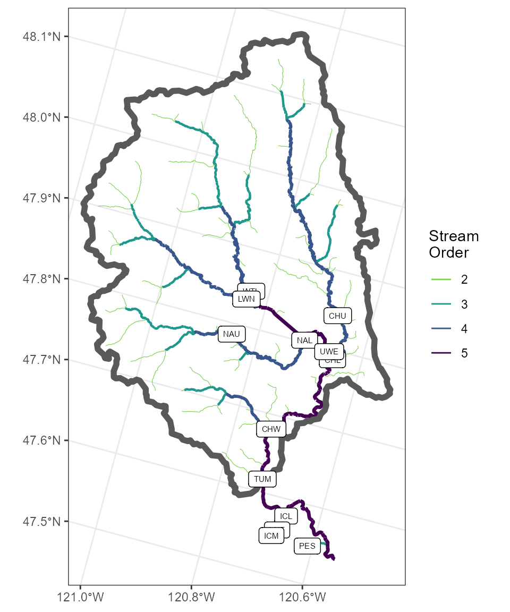
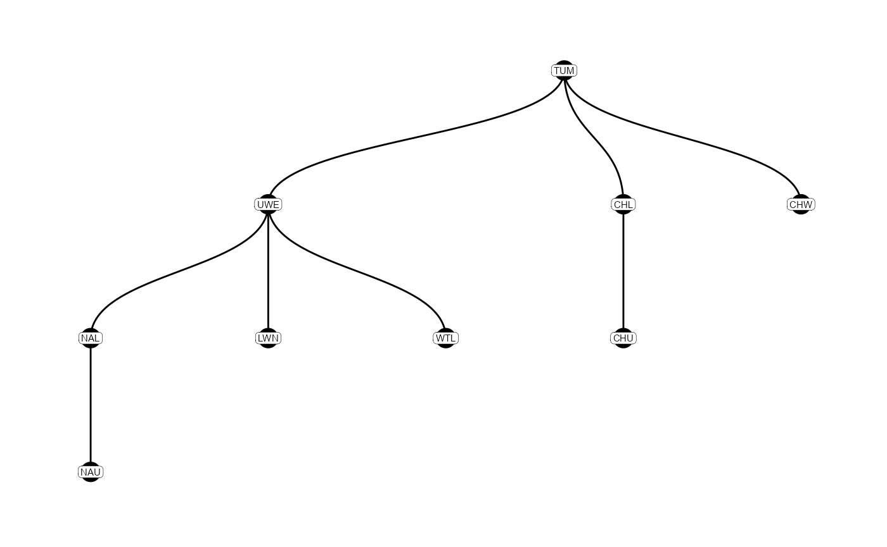
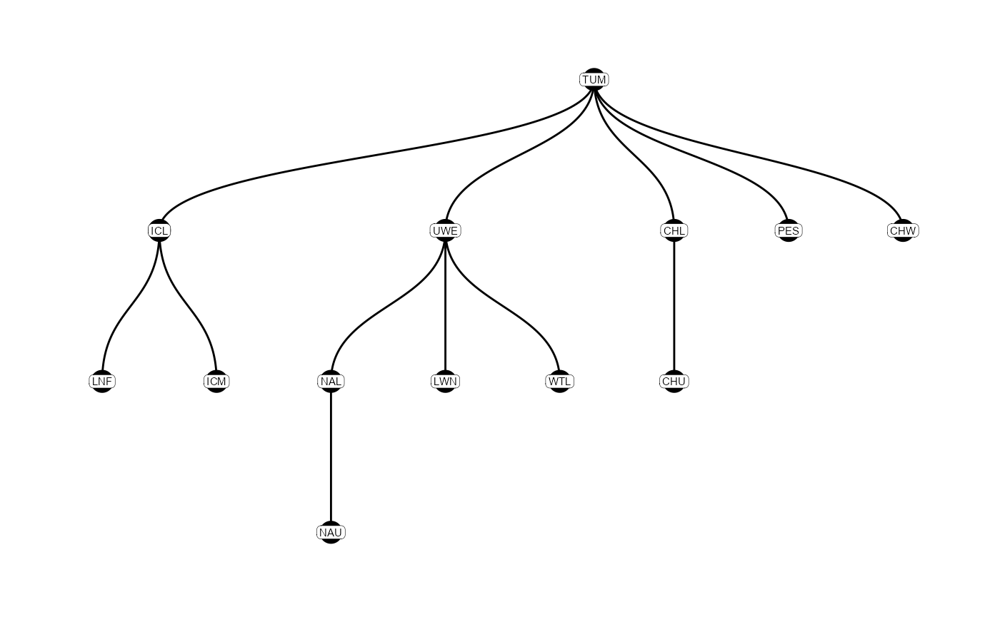

Querying, Compressing, and Making Sense of PIT Tag Detection Data
Kevin See
26 May, 2023
Source:vignettes/Prep_PIT_data.Rmd
Prep_PIT_data.RmdIntroduction
This vignette shows how to use the PITcleanr package to wrangle PIT tag data to either summarize detections or prepare the data for further analysis. PITcleanr can help import complete tag histories from PTAGIS, build a configuration file to help assign each detection to a “node”, and compress those detections into a smaller file. It contains functions to determine which detection locations are upstream or downstream of each other, build a parent-child relationship table of locations, and assign directionality of movement between each detection site. For analyses that focus on one-way directional movement (e.g., straightforward CJS models), PITcleanr can help determine which detections fail to meet that one-way movement assumption and should be examined more closely, and which detections can be kept.
Installation
The PITcleanr package can be installed as an R package from GitHub by using Hadley Wickham’s devtools package:
# install and load remotes, if necessary
install.packages("devtools")
remotes::install_github("KevinSee/PITcleanr",
build_vignettes = TRUE)devtools may require the downloading and installation of Rtools. The latest version of Rtools can be found here.
For the latest development version:
remotes::install_github("KevinSee/PITcleanr@develop")Alternatively, the PITcleanr compendium can be downloaded as a zip file from from this URL: https://github.com/KevinSee/PITcleanr/archive/master.zip Once extracted, the functions can be sourced individually, or a user can build the R package locally.
Once PITcleanr is successfully installed, it can be loaded into the R session. In this vignette, we will also use many functions from the tidyverse group of packages, so load those as well:
Note that many of the various queries in PITcleanr require a connection to the internet.
Querying Detection Data
From PTAGIS
The Columbia Basin PIT Tag Information System (PTAGIS) is the centralized regional database for PIT-tag detections within the Columbia River Basin. It contains a record of each detection of every PIT tag, including the initial detection, or “mark”, when the tag is implanted in the fish, detections on PIT-tag antennas, recaptures (e.g. at weirs) and recoveries (e.g. carcass surveys). It contains a record of every individual detection, which means potentially multiple records of a tag being detected on the same antenna over and over e.g., in the case that it is not moving. Therefore, querying PTAGIS for all of these detections leads to a wealth of data, which can be unwieldy for the user. PITcleanr aims to compress that data to a more manageable size, without losing any of the information contained in that dataset.
PITcleanr starts with a complete capture history query from PTAGIS for a select group of tags of interest. The user will need to compile this list of tags themselves, ideally in a .txt file with one row per tag number, to make it easy to upload to a PTAGIS query.
For convenience, we’ve included one such file with PITcleanr. The following code can be used to find the path to that example file that was installed with the package, titled “tag_list_TUM_2015.txt”, containing IDs for Chinook salmon adults implanted with PIT tags at Tumwater Dam in 2015. Feel free to copy/paste that file to use as a template for creating your own tag list, in which case, you can follow along with your own tags of interest.
system.file("extdata",
"tag_list_TUM_2015.txt",
package = "PITcleanr",
mustWork = TRUE)The example file of tag codes is very simple:
#> # A tibble: 2,019 x 1
#> X1
#> <chr>
#> 1 384.3B239AD241
#> 2 3D9.1BF24B20F5
#> 3 3D9.1C2D76FB78
#> 4 3D9.1C2D770193
#> 5 3D9.1C2D91B3DE
#> 6 3D9.1C2D925C52
#> 7 3D9.1C2D929849
#> 8 3D9.1C2D93282A
#> 9 3D9.1C2DB9A65E
#> 10 3D9.1C2DC026E4
#> # i 2,009 more rowsOnce the user has created their own tag list, or located this example one, they can go to the PTAGIS homepage to query the complete tag histories for those tags. The complete tag history query is available to under Advanced Reporting, which requires a free account from PTAGIS. From the homepage, click on “Login/Register”, and either login to your existing account, or click “Create a new account” to create one.
Once logged into your account, scroll down the dashboard page to the Advanced Reporting Links section. PTAGIS allows users to save reports/queries to be run again. If you’ve created one for PITcleanr in the past, and saved it, you can locate it by clicking on the “My Reports” link. If you’d like to create a new query, click on “Query Builder”, or “Advanced Reporting Home Page” and then ““Create Query Builder2 Report”. From here, choose “Complete Tag History” from the list of possible reports.
There are several query indices on the left side of the query builder, but for the purposes of PITcleanr only a few are needed. First, under “1 Select Attributes” the following attributes are required to work with PITcleanr:
- Tag
- Event Site Code
- Event Date Time
- Antenna
- Antenna Group Configuration
This next group of attributes are not required, but are highly recommended:
- Mark Species
- Mark Rear Type
- Event Type
- Event Site Type
- Event Release Site Code
- Event Release Date Time
Simply move these attributes over from the “Available” column to the “Selected:” column on the page. Other fields of interest to the user may be included as well (e.g. Event Length), but the ones listed above must be added. Any additional attributes will just be included as extra columns in the query output.
The only other required index is “2 Select Metrics”, but that can remain as the default, “CTH Count”, which provides one record for each event recorded per tag.
Set up a filter for specific tags by next navigating to the “29 Tag Code - List or Text File” on the left. And then, after selecting “Tag” under “Attributes:”, click on “Import file…”. Simply upload the .txt file containing your PIT tag codes of interest, or alternatively, feel free to use the “tag_list_TUM_2015.txt” file provided with PITcleanr. After choosing the file, click on “Import” and the tag list will be loaded (delimited by semi-colons). Click “OK”.
Under “Report Message Name:” near the bottom, name the query something appropriate, such as “TUM_Chinook_2015”, and select “Run Report”. Once the query has successfully completed, the output can be exported as a .csv file (e.g. “TUM_Chinook_2015.csv”). Simply click on the “Export” icon near the top, which will open a new page, and select the default settings:
- Export: Whole report
- CSV file format
- Export Report Title: unchecked
- Export filter details: unchecked
- Remove extra column: Yes
And click “Export”, again. We have included an example of data downloaded from PTAGIS with the PITcleanr package. The user can identify where that example file has been saved by running the following code. The file path will be stored as a new object ptagis_file.
ptagis_file = system.file("extdata",
"TUM_Chinook_2015.csv",
package = "PITcleanr",
mustWork = TRUE)Alternatively, if the user has run a query from PTAGIS as described above, they could set ptagis_file to the path and file name of the .csv they downloaded.
# As an example, set path to PTAGIS query output
ptagis_file = "C:/Users/usernamehere/Downloads/TUM_Chinook_2015.csv"Note that in our example file, there are 24938 detections (rows) for 2019 unique tags, matching the number of tags in our example tag list “tag_list_TUM_2015.txt”. For a handful of those tags, in our case 178, there is only a “Mark” detection i.e., that tag was never detected again after the fish was tagged and released. For the remaining tags, many of them were often detected at the same site and sometimes on the same antenna. Data like this, while full of information, can be difficult to analyze efficiently. To illustrate, here is an example of some of the raw data for a single tag:
| Tag Code | Mark Species Name | Mark Rear Type Name | Event Type Name | Event Site Type Description | Event Site Code Value | Event Date Time Value | Antenna ID | Antenna Group Configuration Value | Event Release Site Code Code | Event Release Date Time Value | CTH Count |
|---|---|---|---|---|---|---|---|---|---|---|---|
| 3D9.1BF24B20F5 | Chinook | Unknown | Mark | River Segment | COLR2 | 5/14/2015 8:10:00 AM | NA | 0 | COLR2 | 5/14/2015 12:14:00 PM | 1 |
| 3D9.1BF24B20F5 | Chinook | Unknown | Observation | Instream Remote Detection System | CHL | 8/30/2015 9:24:46 PM | 85 | 100 | NA | NA | 1 |
| 3D9.1BF24B20F5 | Chinook | Unknown | Observation | Instream Remote Detection System | LWE | 6/6/2015 7:28:38 AM | 09 | 120 | NA | NA | 3 |
| 3D9.1BF24B20F5 | Chinook | Unknown | Observation | Instream Remote Detection System | WTL | 6/22/2015 9:04:18 PM | 03 | 120 | NA | NA | 1 |
| 3D9.1BF24B20F5 | Chinook | Unknown | Observation | Adult Fishway | BO3 | 5/26/2015 1:01:16 PM | 17 | 110 | NA | NA | 1 |
| 3D9.1BF24B20F5 | Chinook | Unknown | Observation | Adult Fishway | BO3 | 5/26/2015 1:05:58 PM | 14 | 110 | NA | NA | 1 |
| 3D9.1BF24B20F5 | Chinook | Unknown | Observation | Adult Fishway | BO3 | 5/26/2015 1:05:59 PM | 14 | 110 | NA | NA | 1 |
| 3D9.1BF24B20F5 | Chinook | Unknown | Observation | Adult Fishway | BO3 | 5/26/2015 1:06:06 PM | 12 | 110 | NA | NA | 1 |
| 3D9.1BF24B20F5 | Chinook | Unknown | Observation | Adult Fishway | BO3 | 5/26/2015 1:06:07 PM | 12 | 110 | NA | NA | 1 |
| 3D9.1BF24B20F5 | Chinook | Unknown | Observation | Adult Fishway | BO3 | 5/26/2015 1:41:54 PM | 10 | 110 | NA | NA | 1 |
| 3D9.1BF24B20F5 | Chinook | Unknown | Observation | Adult Fishway | BO3 | 5/26/2015 1:41:55 PM | 10 | 110 | NA | NA | 1 |
| 3D9.1BF24B20F5 | Chinook | Unknown | Observation | Adult Fishway | BO3 | 5/26/2015 1:44:18 PM | 0E | 110 | NA | NA | 1 |
| 3D9.1BF24B20F5 | Chinook | Unknown | Observation | Adult Fishway | BO3 | 5/26/2015 1:44:19 PM | 0E | 110 | NA | NA | 1 |
| 3D9.1BF24B20F5 | Chinook | Unknown | Observation | Adult Fishway | BO3 | 5/26/2015 1:44:20 PM | 0E | 110 | NA | NA | 1 |
| 3D9.1BF24B20F5 | Chinook | Unknown | Observation | Adult Fishway | BO3 | 5/26/2015 1:44:25 PM | 0C | 110 | NA | NA | 1 |
Quality Control
PITcleanr can help perform some basic quality control on the PTAGIS detections. The qcTagHistory() function returns a list including a vector of tags listed as “DISOWN” by PTAGIS, another vector of tags listed as “ORPHAN”, and a data frame of release batches. A tag listed as “DISOWN” or “ORPHAN” indicates that PTAGIS has not received a valid mark file for that tag, which may prompt a user to upload such a file. The release batches data frame can be used by the compress() function in PITcleanr to determine whether to use the event time or the event release time as reported by PTAGIS for a particular site/year/species combination. However, to extract that information, the user will have needed to include the attributes “Mark Species”, “Event Release Site Code” and “Event Release Date Time” in their PTAGIS query.
Here, we’ll run the qcTagHistory() function, again on the file path (ptagis_file) of the PTAGIS complete tag history query output, and save the results to an object qc_detections.
qc_detections = qcTagHistory(ptagis_file)
# view qc_detections
qc_detections
#> $disown_tags
#> character(0)
#>
#> $orphan_tags
#> character(0)
#>
#> $rel_time_batches
#> # A tibble: 23 x 11
#> mark_species_name year event_site_type_description event_type_name
#> <chr> <dbl> <chr> <chr>
#> 1 Chinook 2011 Hatchery Mark
#> 2 Chinook 2012 Hatchery Mark
#> 3 Chinook 2012 Hatchery Mark
#> 4 Chinook 2012 River Mark
#> 5 Chinook 2012 Trap or Weir Mark
#> 6 Chinook 2013 Acclimation Pond Recapture
#> 7 Chinook 2013 Hatchery Mark
#> 8 Chinook 2013 River Mark
#> 9 Chinook 2013 River Mark
#> 10 Chinook 2013 River Mark
#> # i 13 more rows
#> # i 7 more variables: event_site_code_value <chr>, n_tags <int>,
#> # n_events <int>, n_release <int>, rel_greq_event <int>, rel_ls_event <int>,
#> # event_rel_ratio <dbl>To extract a single element from the qc_detections, the user can simply use the basic extraction operator $ e.g., qc_detections$orphan_tags.
From Elsewhere
If your data does not reside in PTAGIS, please see this other vignette about reading in data from other sources.
Compressing Detection Data
The complete tag history query output from PTAGIS (e.g., ptagis_file) will provide a record for every detection of each tag code in the tag list. Again, this may include multiple detections on the same antenna, or the same site within a short period of time, leading to an unwieldy and perhaps messy dataset. One of the main purposes of PITcleanr is to compress that data into an initial summary using the function compress(). At a minimum, this function requires a path e.g., ptagis_file, to the complete tag history query results downloaded from PTAGIS.
In our example, we perform the compress() function on the ptagis_file object containing the file path to our query results, and write the output to an object comp_obs containing the compressed observations.
# view path to example file, of course you can also set ptagis_file to your own PTAGIS query results
ptagis_file
#> [1] "C:/Rfolder/R/win-library/4.1/PITcleanr/extdata/TUM_Chinook_2015.csv"
# run compress() function on it
comp_obs = compress(ptagis_file)
# look at first parts of resulting object
head(comp_obs)
#> # A tibble: 6 x 9
#> tag_code node slot event_type_name n_dets min_det
#> <chr> <chr> <int> <chr> <int> <dttm>
#> 1 384.3B239AD241 NASONC 1 Mark 1 2013-11-04 16:45:00
#> 2 384.3B239AD241 JDJ 2 Observation 12 2014-05-25 11:14:29
#> 3 384.3B239AD241 BO4 3 Observation 11 2015-05-14 16:41:24
#> 4 384.3B239AD241 TD1 4 Observation 3 2015-05-16 11:15:40
#> 5 384.3B239AD241 MC2 5 Observation 17 2015-05-19 17:01:15
#> 6 384.3B239AD241 PRA 6 Observation 2 2015-05-24 13:51:16
#> # i 3 more variables: max_det <dttm>, duration <drtn>, travel_time <drtn>The output consists of a tibble containing columns for:
- tag_code: The unique PIT tag ID.
- node: By default, each site code from PTAGIS is considered a node. More on this below…
- slot: A detection “slot” for each tag, numbered in chronological order. Also more on this below…
- event_type_name: The type of “event”. Typically, mark, observation, recapture, or recovery.
- n_dets: The number of detections that occurred within that slot.
- min_det: The time of the first (min) detection in the slot.
- max_det: The time of the last (max) detection in the slot.
- duration: The duration of that slot (maximum - minimum detection time).
- travel_time: The travel time between the previous slot and that one.
A note on “nodes”: A node is the spatial scale of interest for the user. By default, the compress() function considers a site code from PTAGIS as a node. However, a node could be defined as the individual PIT antenna a detection was made on, or the array that antenna is a part of, or groups of arrays, or sites, or groups of sites, or possibly even larger (e.g, any detection in this tributary!) depending on the spatial scale desired. The user may decide to define some arrays at particular sites to be their own nodes, while simultaneously lumping all the sites in a particular watershed into a single node. To utilize this kind of grouping, a configuration file or table must be supplied to the configuration argument in the compress() function. This configuration file helps map what node each antenna or MRR site corresponds to. By default, compress assigns each site code to its own node.
Each slot in the output is defined as all detections on a particular node before the tag is detected on a different node. The user can define a maximum number of minutes between detections before a new slot should be defined by supplying a value to the max_minutes argument to compress(). The units of the duration and travel_time columns can also be defined by the units argument. The default is minutes (mins). As an example, if a tag moves from node A to B and back to A, there will be three slots in the compressed data.
The help menu for compress(), or any function for that matter, can be accessed using:
?PITcleanr::compressIn our Tumwater Dam Chinook salmon example, the compress() function has scaled down the raw data from PTAGIS from 24,938 rows of data to a slightly more manageable 7,086 rows. At the same time, the sum of the n_dets column in comp_obs is 24,938, showing that every detection from the raw data has been accounted for. For much of the remaining vignette, we will explore other functionality of PITcleanr and as it relates to this compressed data i.e., the comp_obs object.
PTAGIS Site Metadata
PITcleanr includes a convenience function queryPtagisMeta() to query all the metadata associated with PTAGIS sites, including both Mark/Recapture/Recovery (MRR) and Interrogation (INT) sites. That metadata can also be found on the PTAGIS website here. Many of the columns included in the output from queryPtagisMeta() are specific to either the INT or MRR site types, so you may notice that many values in the output, in our example below ptagis_meta, are NA depending on the site type and column. If desired, the user could write that file out to a .csv file or similar, using a function like write_csv() from the readr package..
ptagis_meta = queryPtagisMeta()
# view first 6 records of PTAGIS site metadata using head() function
head(ptagis_meta)
#> # A tibble: 6 x 42
#> site_code site_name site_description site_type active operations_organizat~1
#> <chr> <chr> <chr> <chr> <lgl> <chr>
#> 1 0HR Henrys Ins~ "This site is 3~ Instream~ TRUE Biomark
#> 2 0HR Henrys Ins~ "This site is 3~ Instream~ TRUE Biomark
#> 3 0HR Henrys Ins~ "This site is 3~ Instream~ TRUE Biomark
#> 4 158 Fifteenmil~ "Instream detec~ Instream~ TRUE Oregon Dept. of Fish ~
#> 5 158 Fifteenmil~ "Instream detec~ Instream~ TRUE Oregon Dept. of Fish ~
#> 6 158 Fifteenmil~ "Instream detec~ Instream~ TRUE Oregon Dept. of Fish ~
#> # i abbreviated name: 1: operations_organization_name
#> # i 36 more variables: operations_organization_code <chr>, latitude <dbl>,
#> # longitude <dbl>, rkm <chr>, rkm_total <dbl>, first_year <dbl>,
#> # last_year <dbl>, operation_period <chr>, operational <lgl>,
#> # first_date <chr>, last_date <chr>, last_file_name <chr>,
#> # last_file_opened_on <chr>, last_file_closed_on <chr>,
#> # last_file_processed_on <chr>, last_tag_code <chr>, last_tag_time <chr>, ...
# write ptagis_meta to .csv file
write_csv(ptagis_meta,
"C:/Users/usernamehere/Desktop/ptagis_metadata.csv")Site Configuration
Note that each of the 24,938 rows in our complete tag history results corresponds to the detection of a given PIT tag on an individual antenna. Although informative, this may be excessive for your purposes e.g., a movement, survival, or mark-recapture analysis. Instead, the user might just be interested in which array (group of antennas) or group of arrays that a given PIT tag was detected on. In PITcleanr, we refer to each of these locations as a “node”. Such information can be provided to the configuration argument of the compress() function; the configuration table or file contains all the information from PTAGIS to map each particular detection record to a node of interest. This mapping must include the site code, the antenna code, and the antenna configuration, all of which appear in both the PTAGIS complete tag query results and the PTAGIS metadata ptagis_meta above. That information can be found in the following:
# The PTAGIS complete tag history results
# column `Event Site Code Value` # site code
# column `Antenna ID` # antenna code
# column `Antenna Group Configuration Value` # antenna configuration
# The PTAGIS site metadata
ptagis_meta$site_code # site code
ptagis_meta$antenna_id # antenna code
ptagis_meta$configuration_sequence # antenna configurationPITcleanr includes a function buildConfig() that maps each array (row of antennas) at a site onto a node. Using buildConfig(), the upstream arrays are labeled with the site code plus A0 and the downstream arrays are assigned B0. For sites with three arrays, the middle array is grouped with the upstream array. For sites with four arrays, the upper two arrays are mapped to A0 and the lower two arrays are mapped to B0. Alternatively, the user could use metadata from PTAGIS (also see ?queryPtagisMeta) and construct this mapping any way they choose. This type of configuration file (or tibble or data frame) can be provided to the configuration argument in compress() to assign each detection to it’s associated node.
In the following example, we use the buildConfig() function to generate a default configuration and save it as array_configuration. Several sites are then consolidated into a single node (e.g. LNF, TUM), and some mark-recovery-recapture sites are merged with upstream array nodes, and the modified configuration is saved as configuration which can then be fed to the compress() function.
array_configuration = buildConfig()
# customize some pieces
configuration = array_configuration %>%
# first, for example, 'LNF' and 'LEAV' are re-coded into a single node 'LNF'
mutate(node = ifelse(site_code %in% c('LNF', 'LEAV'),
'LNF',
node),
# these three nodes are all re-coded to a single 'TUM'
node = ifelse(site_code %in% c('TUF', 'TUMFBY', 'TUM'),
'TUM',
node),
node = ifelse(site_code == 'CHIWAC',
'CHWA0',
node),
node = ifelse(site_code %in% c('CHIWAR', 'CHIWAT'),
'CHLA0',
node),
node = ifelse(site_code == 'CHIW',
'CHLA0',
node),
# In this case, PIT tags from carcass recoveries in the Chikamin River are
# grouped with the upper 'CHU' array
node = ifelse(site_code == 'CHIKAC',
'CHUA0',
node),
node = ifelse(site_code == 'NASONC',
'NALA0',
node),
node = ifelse(site_code == 'WHITER',
'WTLA0',
node),
node = ifelse(site_code == 'LWENAT',
'LWNA0',
node)) %>%
distinct()Now, re-run the compress() function, except supplying a configuration:
# re-run compress(), providing configuration
comp_obs = compress(ptagis_file,
configuration = configuration)
# look at first part of comp_obs
head(comp_obs)
#> # A tibble: 6 x 9
#> tag_code node slot event_type_name n_dets min_det
#> <chr> <chr> <int> <chr> <int> <dttm>
#> 1 384.3B239AD241 NALA0 1 Mark 1 2013-11-04 16:45:00
#> 2 384.3B239AD241 JDJ 2 Observation 12 2014-05-25 11:14:29
#> 3 384.3B239AD241 BO4 3 Observation 11 2015-05-14 16:41:24
#> 4 384.3B239AD241 TD1 4 Observation 3 2015-05-16 11:15:40
#> 5 384.3B239AD241 MC2 5 Observation 17 2015-05-19 17:01:15
#> 6 384.3B239AD241 PRA 6 Observation 2 2015-05-24 13:51:16
#> # i 3 more variables: max_det <dttm>, duration <drtn>, travel_time <drtn>Note that buildConfig() returns the same number of records as queryPtagisMeta(), except buildConfig() returns a more manageable number of columns (15) and provides the functionality of assigning each antenna to a node, based on the array it is part of.
Alternately, the user could write the object array_configuration to file, modify values in the node column by hand, and then re-import the modified file, again to an object configuration which could be fed to compress().
# write array_configuration to file
write_csv(array_configuration,
"C:/Users/usernamehere/Desktop/array_configuration.csv")
# MODIFY VALUES IN NODE COLUMN BY HAND
# re-import file to object configuration
configuration = read_csv("C:/Users/usernamehere/Desktop/array_configuration.csv")For some purposes, this may be enough, and the user can take the compressed data, comp_obs, and summarize it as needed, or perform whatever analyses they would like. In other cases, if directionality of movement is required, PITcleanr provides additional functionality.
Mapping Detection Sites
It can often be helpful to plot various detection locations; those locations can then be used to determine which locations are upstream or downstream relative to other locations. To accomplish this, PITcleanr provides a few additional functions described here:
Extract Sites of Interest
The queryPtagisMeta() and buildConfig() functions in PITcleanr return information from all INT and MRR sites in PTAGIS. However, the user may only be interested in detections from site codes found within their complete tag history output downloaded from PTAGIS e.g., your ptagis_file. The extractSites() function does just that: extracts the site codes found in the complete tag history. In addition, the detections can be filtered by a minimum and/or maximum detection date, and the results are returned as either a tibble, or as a simple (spatial) feature sf object. Setting the min_date argument could be useful if the user is not interested in detections at sites prior to your study period e.g., detections that occur prior to fish arriving at your tagging or release location.
In this example, we create a new object sites_sf, return it as an sf object (by setting as_sf = T) and only return sites from those detections that occurred after May 1, 2015. We also extract sites only from the Wenatchee subbasin and remove a couple sites that we perhaps don’t care about. More information on simple features (sf objects) can be found here.
sites_sf = extractSites(ptagis_file,
as_sf = T,
min_date = "20150501",
configuration = configuration)
# focus on sites within Wenatchee subbasin
sites_sf = sites_sf %>%
# all sites in the Wenatchee have a river kilometer that starts with 754
filter(grepl("754.", rkm),
# remove a few sites we don't care about
!site_code %in% c("LWE", "ICICLC"))Query Flowlines
The user may also be interested in getting the flowlines (i.e., the stream or river network), for their sites of interest. PITcleanr provide the function queryFlowlines() to accomplish that. queryFlowlines() downloads an NHDPlus v2 stream layer from USGS using the suggested nhdplusTools R package. It requires the spatial location of sites as an sf object (such as the output of extractSites()), and a site code identified as the “root” site. The root site might correspond with your tagging or release location and is provided to the root_site_code argument. The function starts from the root_site_code and downloads all flowlines upstream from there, with a minimum stream order set by min_strm_order.
If flowlines downstream of the root_site_code site are required, set the argument dwnstrm_sites = TRUE (default is FALSE). This might be useful if the user is interesting in analyzing or modeling sites downstream of the release site. If you’re not interested in analyzing/modeling downstream sites you can set dwnstrm_sites = FALSE which may speed up the function considerably.
The user can also control the minimum stream order of the downstream flowlines by setting the dwn_min_stream_order_diff argument. Note: smaller stream orders = smaller streams. This can be useful if the user is not interested or wants to prevent downloading all sorts of tiny streams downstream of a tagging or release location; the dwn_min_stream_order_diff is an attempt to constrain the amount of flowlines downloaded downstream of the root_site_code which can be sizable. The dwn_min_stream_order_diff corresponds to the difference between the stream order of the root_site_code site and the minimum stream order desired in the downstream flowlines. In our example, our root_site_code is located on a stream order of 5 (Wenatchee River) and dwn_min_stream_order_diff = 2, in this case only downstream flowlines of at least 5-2 = 3 will be downloaded. The extent of the downstream flowlines is further constrained by the sites_sf object. The queryFlowlines() function returns a list consisting of: * flowlines: the flowlines upstream of the root_site_code * basin: the polygon containing the upstream flowlines * dwn_flowlines: the flowlines downstream of the root_site_code, if dwnstrm_sites = T
Note, depending on the spatial extent of your flowlines, the queryFlowlines() function may take awhile. Here we create a list of objects, nhd_list. We then use the function rbind() to combine the nhd$flowlines and nhd$dwn_flowlines into a single flowlines simple feature object. More information on the nhdplusTools R package can be found here.
# query the flowlines
nhd_list = queryFlowlines(sites_sf = sites_sf,
root_site_code = "TUM",
min_strm_order = 2,
dwnstrm_sites = T,
dwn_min_stream_order_diff = 2)
#> Querying streams upstream of TUM
#> Calculating furthest mainstem point downstream
#> Querying streams downstream of TUM
# compile the upstream and downstream flowlines
flowlines = nhd_list$flowlines %>%
rbind(nhd_list$dwn_flowlines)The following provides a nice example of how to plot the sites and flowlines using the ggplot2 R package.
# load ggplot2
library(ggplot2)
# plot the flowlines and the sites
ggplot() +
geom_sf(data = flowlines,
aes(color = as.factor(StreamOrde),
size = StreamOrde)) +
scale_color_viridis_d(direction = -1,
option = "D",
end = 0.8) +
scale_size_continuous(range = c(0.2, 1.2),
guide = 'none') +
geom_sf(data = nhd_list$basin,
fill = NA,
lwd = 2) +
geom_sf(data = sites_sf,
size = 4,
color = "black") +
ggrepel::geom_label_repel(
data = sites_sf,
aes(label = site_code,
geometry = geometry),
size = 2,
stat = "sf_coordinates",
min.segment.length = 0,
max.overlaps = 50
) +
theme_bw() +
theme(axis.title = element_blank()) +
labs(color = "Stream\nOrder")
If interested, the user can save this plot as a PDF (or similar), using the ggsave() function. ggsave() will simply save the last plot that was displayed.
# save as PDF to Desktop, for example
ggsave("C:/Users/usernamehere/Desktop/site_map.pdf")“Parent-Child” Relationships
When dealing with detections of individual tags, the user often is interested in which locations are connected to which other locations along the stream network. One way to capture this information is through the construction of a parent-child table describing the “relationships” among locations. In a parent-child table, each row consists of a parent location, and a child location that is connected directly to that parent location By default, PITcleanr assigns parent-child relationships as moving in an upstream direction, so a single parent may have multiple child locations upstream, if the stream network branches upstream of it. However, each child should only have a single parent, as we are assuming a lack of looped connections in our stream network. If the user is interested in a downstream parent-child relationship, the parent and child designations in the table can be manually switched. As an example, assuming only upstream movement, a weir may be considered a parent and each of its next upstream arrays considered children. A location with no detection sites further upstream has no children, but is presumably the child of a downstream location. All of the parent-child relationships among locations in a watershed can describe the potential movements by an individual tag (moving from parent to child, to the next child, etc.).
To help illustrate, the following depicts the parent-child relationships among nodes in our Wenatchee River example, assuming only upriver movement from Tumwater Dam. More on this to follow…

PITcleanr constructs this relationship by joining a spatial (sf) point object of sites with the flowlines queried via queryFlowlines(). The NHDPlus layer that is returned contains a unique identifier, or hydrosequence, for every segment, as well as the identifier of the hydrosequence immediately upstream and downstream. Using this information, PITcleanr can identify the next downstream site from every known location (using the findDwnstrmSite() function), and thus construct the parent child table through the buildParentChild() function. By default, buildParentChild() returns a tibble identifying every parent-child pair, as well as the hydrosequence joined to the parent and child location. If the argument add_rkm is set to TRUE, PITcleanr will query the PTAGIS metadata again, and attach the river kilometer (or rkm) for each parent and child location.
parent_child = buildParentChild(sites_sf,
flowlines)
#> Error in findDwnstrmHydroseg(hydro_dn, flow_lines, hydro_pause_ids) :
#> HydroSeq 50016572 not found within flow lines.
#>
#> Error in findDwnstrmHydroseg(hydro_dn, flow_lines, hydro_pause_ids) :
#> HydroSeq 50011492 not found within flow lines.
parent_child
#> # A tibble: 13 x 4
#> parent child parent_hydro child_hydro
#> <chr> <chr> <dbl> <dbl>
#> 1 PES ICL 50011578 50012366
#> 2 ICL TUM 50012366 50013200
#> 3 ICL ICM 50012366 50017117
#> 4 TUM UWE 50013200 50018330
#> 5 TUM CHL 50013200 50022268
#> 6 TUM CHW 50013200 50045832
#> 7 UWE LWN 50018330 50021585
#> 8 UWE WTL 50018330 50026363
#> 9 UWE NAL 50018330 50028949
#> 10 CHL CHU 50022268 50023868
#> 11 NAL NAU 50028949 50034395
#> 12 NA PES NA 50011578
#> 13 NA LNF NA 50016752After initially building a parent-child table, there is usually some editing that needs to happen. This is necessary for a variety of reasons we’ve observed:
- Perhaps the latitude and longitude of a site was not correct, and it was placed on the wrong hydrosequence of the flowlines.
- The flowlines layer from the USGS could be inaccurate around a particular area, causing the parent-child relationships to be incorrect.
- A site may be located at the mouth of a tributary was joined to the mainstem hydrosequence of the flowline, instead of the tributary, causing problems for sites upstream and downstream of that site.
For these reasons (or any others), PITcleanr provides a function to edit the parent-child table, editParentChild(). It requires a list the length of rows to be fixed (fix_list). Each element of this list is a vector of length 3, where the first two elements contain the parent and child locations to be edited, and the third element is the new (correct) parent location. As each child contains a single parent in the table, this is enough information to uniquely target individual rows of the parent-child table.
The user can also switch parent-child pairs, making the parent the child and vice versa, using the switch_parent_child argument. This is primarily intended to fix relationships between a root site and the initial downstream sites. If, by default, the parent child table is built assuming upstream movement, but the user would like to incorporate downstream movement from the root site to a location downstream, this argument will be useful. However, it will not “fix” associated parent-child relationships with the locations in the switch_parent_child list; those must be fixed through the fix_list argument.
In the example below, the original parent-child table had some problems with 2 sites (ICL and PES) downstream of the root site, TUM. In addition, the flowlines are not accurate near the confluence of Icicle Creek and the mainstem Wenatchee river, which has thrown off some of the relationships between ICL and surrounding sites. We would like to make TUM the parent of both ICL and PES, and ICL should be the parent of ICM, not LNF. In addition, ICL was placed on the mainstem river due to a mistake in the flowlines, and therefore listed as a parent of TUM, so we’d like to switch that. All of these corrections are implemented below using the editParentChild() function.
parent_child = editParentChild(parent_child,
fix_list = list(c(NA, "ICL", "TUM"),
c(NA, "PES", "TUM"),
c(NA, "LNF", "ICL"),
c("LNF", 'ICM', 'ICL'),
c("PES", "ICL", "TUM")),
switch_parent_child = list(c("ICL", 'TUM')))
# view corrected parent_child table
parent_child
#> # A tibble: 12 x 4
#> parent child parent_hydro child_hydro
#> <chr> <chr> <dbl> <dbl>
#> 1 ICL LNF 50012366 50016752
#> 2 ICL ICM 50012366 50017117
#> 3 TUM PES 50013200 50011578
#> 4 TUM ICL 50013200 50012366
#> 5 TUM UWE 50013200 50018330
#> 6 TUM CHL 50013200 50022268
#> 7 TUM CHW 50013200 50045832
#> 8 UWE LWN 50018330 50021585
#> 9 UWE WTL 50018330 50026363
#> 10 UWE NAL 50018330 50028949
#> 11 CHL CHU 50022268 50023868
#> 12 NAL NAU 50028949 50034395Note, if the configuration file contains multiple nodes for some sites (e.g., a node for each array at a site), then the parent-child table can be expanded to accommodate these nodes using the addParentChildNodes() function. The function essentially “expands” (adds rows) to the existing parent-child table to accommodate those additional nodes. Note: the addParentChildNodes() function assumes that the parent-child table is arranged so that children are upstream of parents, and nodes designated as A0 are upstream of those designated B0. Currently, the function can only handle up to two nodes at each site.
Here, we use the addParentChildNodes() function on our existing parent_child table, and provide our existing configuration tibble to the configuration argument to expand the tibble. Our results are saved to a new object parent_child_nodes.
parent_child_nodes = addParentChildNodes(parent_child,
configuration = configuration)
# view expanded parent-child table
parent_child_nodes
#> # A tibble: 22 x 4
#> parent child parent_hydro child_hydro
#> <chr> <chr> <dbl> <dbl>
#> 1 PESB0 PESA0 50011578 50011578
#> 2 ICLB0 ICLA0 50012366 50012366
#> 3 ICLA0 LNF 50012366 50016752
#> 4 ICLA0 ICMB0 50012366 50017117
#> 5 TUM PESB0 50013200 50011578
#> 6 TUM ICLB0 50013200 50012366
#> 7 TUM UWE 50013200 50018330
#> 8 TUM CHLB0 50013200 50022268
#> 9 TUM CHWB0 50013200 50045832
#> 10 ICMB0 ICMA0 50017117 50017117
#> # i 12 more rowsMovement Paths & Node Order
PITcleanr provides a function to determine the detection locations a tag would pass between a starting point (e.g, a tagging or release location) and an ending point (e.g., a spawning location, in the case of adult salmon), based on the parent-child table. We refer to these detection locations as a movement path.
The function buildPaths() will provide the movement path leading to each node in a parent-child table. It provides a row for each node, and then provides the path that an individual would have to take to get to that given node. The build_paths() function could be performed on either our parent_child or parent_child_nodes objects.
buildPaths(parent_child_nodes)
#> # A tibble: 22 x 2
#> end_loc path
#> <chr> <chr>
#> 1 PESA0 TUM PESB0 PESA0
#> 2 ICLA0 TUM ICLB0 ICLA0
#> 3 LNF TUM ICLB0 ICLA0 LNF
#> 4 ICMB0 TUM ICLB0 ICLA0 ICMB0
#> 5 PESB0 TUM PESB0
#> 6 ICLB0 TUM ICLB0
#> 7 UWE TUM UWE
#> 8 CHLB0 TUM CHLB0
#> 9 CHWB0 TUM CHWB0
#> 10 ICMA0 TUM ICLB0 ICLA0 ICMB0 ICMA0
#> # i 12 more rowsThe buildNodeOrder() provides both the path and the node order of each node (starting from the root site and counting upwards past each node). Each of these functions currently has an argument, direction that provides paths and node orders based on upstream movement (the default) or downstream movement. For downstream movement, each node may appear in the resulting tibble multiple times, as there may be multiple ways to reach that node, from different starting points. Again, buildNodeOrder() could be performed on either parent_child or parent_child_nodes.
buildNodeOrder(parent_child)
#> # A tibble: 13 x 3
#> node node_order path
#> <chr> <dbl> <chr>
#> 1 TUM 1 TUM
#> 2 CHL 2 TUM CHL
#> 3 CHU 3 TUM CHL CHU
#> 4 CHW 2 TUM CHW
#> 5 ICL 2 TUM ICL
#> 6 ICM 3 TUM ICL ICM
#> 7 LNF 3 TUM ICL LNF
#> 8 PES 2 TUM PES
#> 9 UWE 2 TUM UWE
#> 10 LWN 3 TUM UWE LWN
#> 11 NAL 3 TUM UWE NAL
#> 12 NAU 4 TUM UWE NAL NAU
#> 13 WTL 3 TUM UWE WTL
# to set direction to downstream, for example
# buildNodeOrder(parent_child,
# direction = "d")Sometimes it helps to visualize the paths that each tag could take. PITcleanr provides a function, plotNodes() that utilizes the tidygraph and ggraph packages to generate a plot of all the detection nodes and their connections based on the parent-child table. Within plotNodes(), there is a function called buildNodeGraph() that constructs the tidygraph tbl_graph object that is then used to make the plot. Users can call that buildNodeGraph() function themselves and use the output to make their own customizable graphs if they desire.
For example, plotNodes() of the parent_child:
plotNodes(parent_child,
layout = "tree")
And similarly for the parent_child_nodes object:
plotNodes(parent_child_nodes,
layout = "tree")
Add Direction
Users may be interested in the apparent movement directionality of a tag, based on its detections. For many analyses, it is necessary to assume a tag/individual undergoes only one-way travel (i.e., travel is either all upstream or all downstream). To meet this assumption, individual detections sometime need to be discarded. For example, an adult salmon undergoing an upstream spawning migration may move up a mainstem migration corridor (e.g., the Snake River), dip into a tributary (e.g., Selway River in the Clearwater), and then move back downstream and up another tributary (e.g., Salmon River) to their spawning location. In this case, any detections that occurred in the Clearwater River would need to be discarded if we believe the fish was destined for a location in the Salmon River. In other cases, more straightforward summaries of directional movements may be desired.
To accommodate this, PITcleanr provides a function, addDirection(), to take the compressed observations from compress() and the parent-child table (parent_child or parent_child_nodes) and indicate the movement direction of each detection in relation to its previous detection. It may be useful to filter detections so they all start at a particular site for each tag before applying addDirection(). Currently this function only provides directions relative to an upstream movement (i.e. “forward” indicates upstream movement, “backward” indicates downstream movement). A direction of “unknown” indicates the tag has shifted to a different branch in the stream network.
# determine trap date, and remove detections prior to that
obs_direct = comp_obs %>%
# get the first detection of each tag at Tumwater Dam
left_join(comp_obs %>%
filter(node == "TUM",
event_type_name %in% c("Mark", "Recapture")) %>%
group_by(tag_code) %>%
filter(min_det == min(min_det)) %>%
summarise(start_date = min_det,
.groups = "drop"),
by = "tag_code") %>%
# filter any detections before the "start_date"
filter(min_det >= start_date) %>%
group_by(tag_code) %>%
# re-calculate the "slots" for each tag_code
mutate(slot = slot - min(slot) + 1) %>%
ungroup() %>%
# add direction using "addDirection()
addDirection(parent_child = parent_child_nodes)
# for example, let's look at directional observations for a single tag, and select certain columns
obs_direct %>%
filter(tag_code == "3D9.1C2DE4B17E") %>%
select(tag_code, node, slot, min_det, direction)
#> # A tibble: 9 x 5
#> tag_code node slot min_det direction
#> <chr> <chr> <dbl> <dttm> <chr>
#> 1 3D9.1C2DE4B17E TUM 1 2015-06-10 23:59:00 start
#> 2 3D9.1C2DE4B17E CHLB0 2 2015-06-15 22:56:59 forward
#> 3 3D9.1C2DE4B17E CHLA0 3 2015-06-15 22:57:53 forward
#> 4 3D9.1C2DE4B17E CHLB0 4 2015-06-16 22:14:25 backward
#> 5 3D9.1C2DE4B17E CHLA0 5 2015-06-16 22:15:09 forward
#> 6 3D9.1C2DE4B17E CHLB0 6 2015-06-17 00:48:51 backward
#> 7 3D9.1C2DE4B17E CHLA0 7 2015-06-17 08:00:00 forward
#> 8 3D9.1C2DE4B17E WTLA0 8 2015-07-15 10:00:00 unknown
#> 9 3D9.1C2DE4B17E WTLB0 9 2015-09-06 19:17:56 backwardWhat Next?
Congratulations, you’ve now finished the introductory vignette of the PITcleanr R package. One purpose of the PITcleanr package is to prepare and help clean PIT tag observations for the Dam Adult Branch Occupancy Model (DABOM). For further information, consider browsing additional vignettes included with the PITcleanr package using:
browseVignettes("PITcleanr")